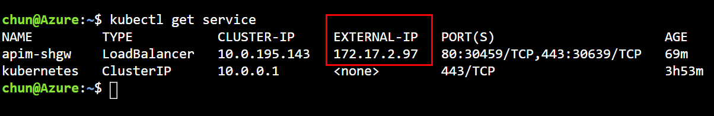
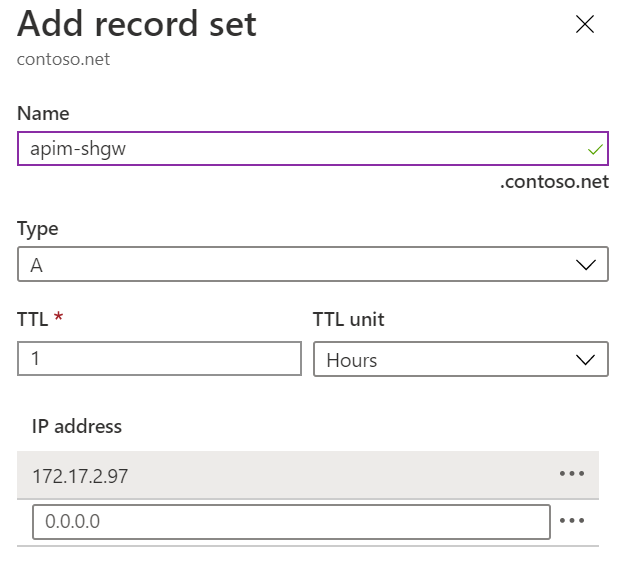
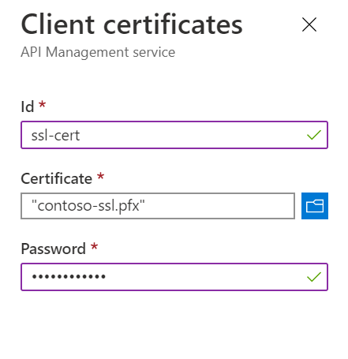
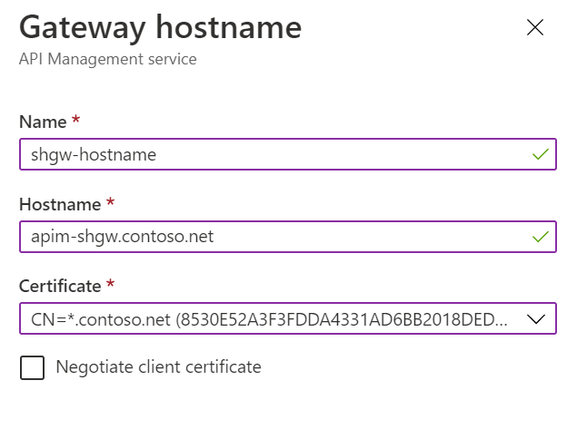
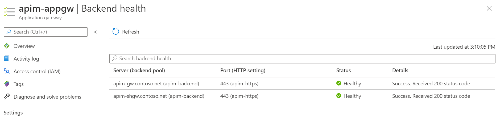

Integrate Application Gateway with the self-hosted gateway
In the previous tutorial, you've deployed the self-hosted gateway in the AKS cluster. In this tutorial, you continue integrating it with the Application Gateway which is the last piece of the puzzle.
In this tutorial, you learn to:
- ✅ Configure the domain name for the self-hosted gateway
- ✅ Integrate the AppGW with the self-hosted gateway
Configure the domain name for the self-hosted gateway
Before the self-hosted gateway can be added to the backend pool of the AppGW, you need to configure a custom domain name for it.
-
Open Cloud Shell and run the following command to find the IP address of the self-hosted gateway service.
kubectl get service -
Take a note of the External-IP address of apim-shgw service.
The external IP of the service is within the address space of the VNET because we used an internal load balancer for it.

-
In the Azure Portal, go to the private DNS zone
contoso.net, add a new record set and point it to the IP address of the gateway service, as shown below.
-
Go to API Management in the Azure Portal.
-
Click Certificates and click Add to add the SSL certificate.
-
Add
contoso-ssl.pfx, as shown below.
-
Open the self-hosted gateway settings by clicking Gateways and the gateway.
-
Click Hostnames and click Add to add a new host name for the gateway.

Integrate AppGW with the self-hosted gateway
-
In the Azure Portal, go to Application Gateway.
-
Click Backend pools and the existing backend pool apim-backend.
-
Add
apim-shgw.contoso.netas a new type of IP address or FQDN target. -
When the backend target is added to the backend pool, click Health probes and the existing custom probe apim-probe.
-
Update the Path from
/status-0123456789abcdefto/internal-status-0123456789abcdef. Uncheck I want to test the backend health before adding the health probe and click Save to save the changes.At the moment, the documented probe path of APIM,
/status-0123456789abcdef, doesn't work for the self-hosted gateway./internal-status-0123456789abcdefis an undocumented probe path which works for both APIM and the self-hosted gateway temporarily. The APIM product team is working on an update of the probe path for the self-hosted gateway. You need to update the path again when the update is available. -
Click Backend health to check the health of the backend. You should see both targets are healthy.

At this point, you've completed all tasks and steps that are needed to integrate Application Gateway, API Management and Self-Hosted Gateway in and internal virtual network.
Move on to the last tutorial of this series, we will run a quick test to see how the whole environment works.